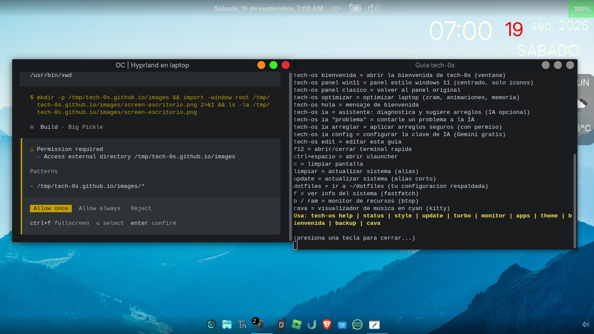
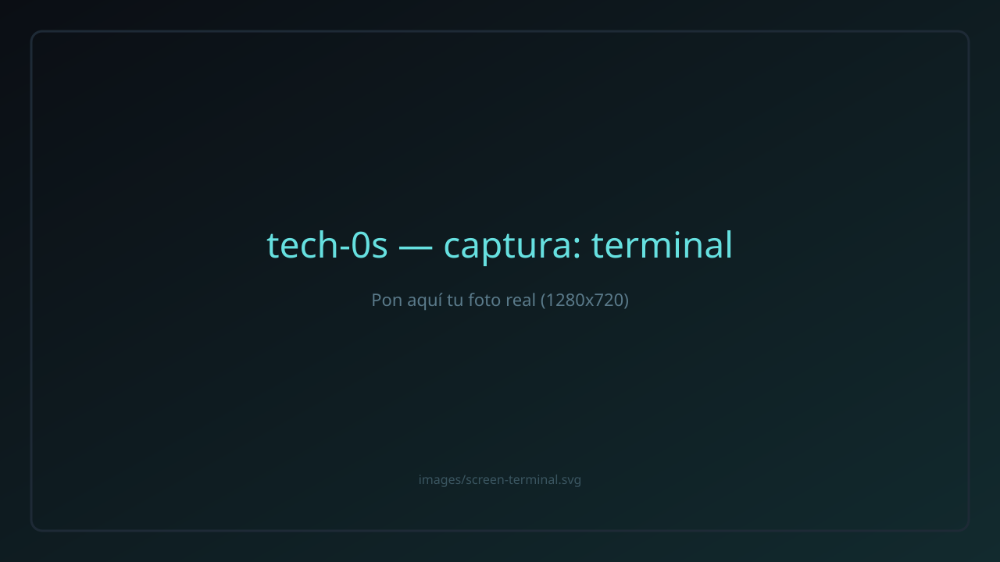
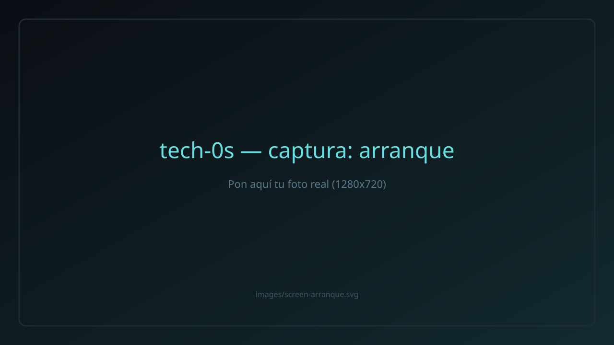

La distro personal de tech-0s · basada en LMDE 7 · Debian Trixie · Cinnamon
tech-0s 7 "gigi" es un sistema operativo ligero y de aspecto futurista, con arranque personalizado, terminal propia y una IA que ayuda a arreglar fallos.
tech-os ia)| Ubicación | Espejo | Descarga |
|---|---|---|
| Permanente | Internet Archive | tech-0s-7-gigi.iso · detalles |
| Local | Servidor tech-0s | tech-0s-7-gigi.iso |
Pensado para laptops modestas: consume poca RAM y responde suave.
La terminal trae tech-os ia: escribe qué falla y te ayuda a arreglarlo.
Herramientas tech-os con ayuda integrada y comandos en español.
Construido sobre Debian Trixie (LMDE 7) y Cinnamon: confiable y conocido.
Compatible con BIOS y UEFI, desde USB o DVD. También para máquinas virtuales.
Hecho a mano, sin telemetría y copyleft: el sistema es 100% tuyo.
Vistas del escritorio tech-0s 7 "gigi".



Cualquiera puede fabricar ISO falsas. Verifica siempre tu descarga:
cargando sha256...
sha256sum -c sha256sum.txt
tech-0s-7-gigi.iso.dd o balenaEtcher).tech-os help y tech-os ia.